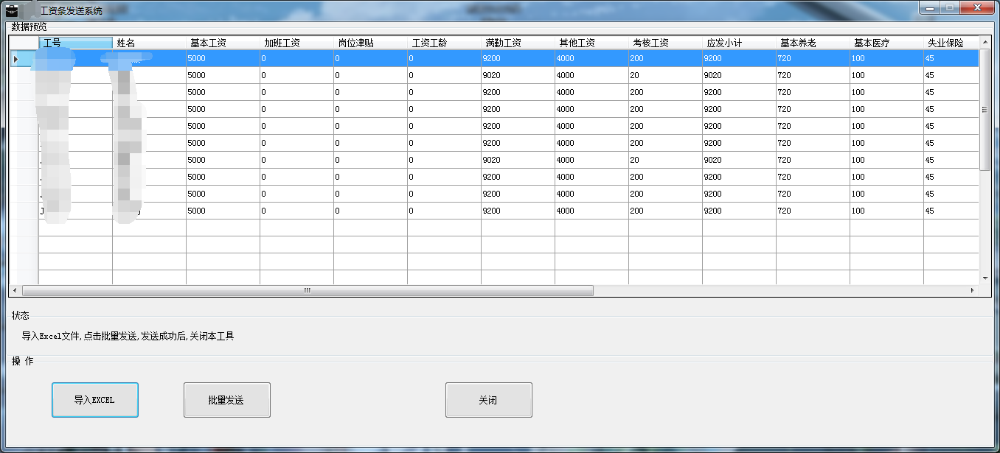
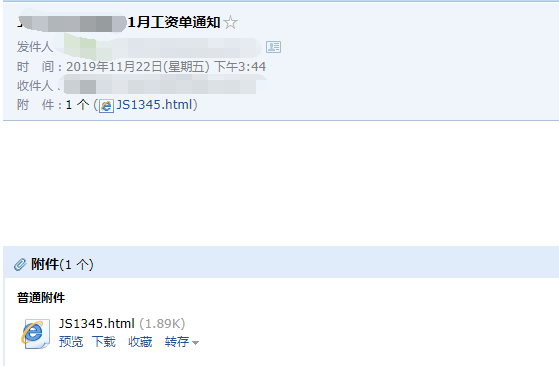
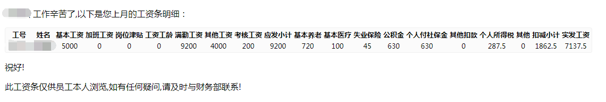
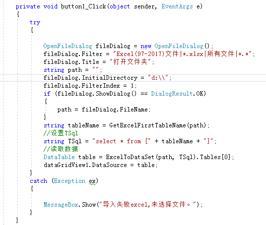
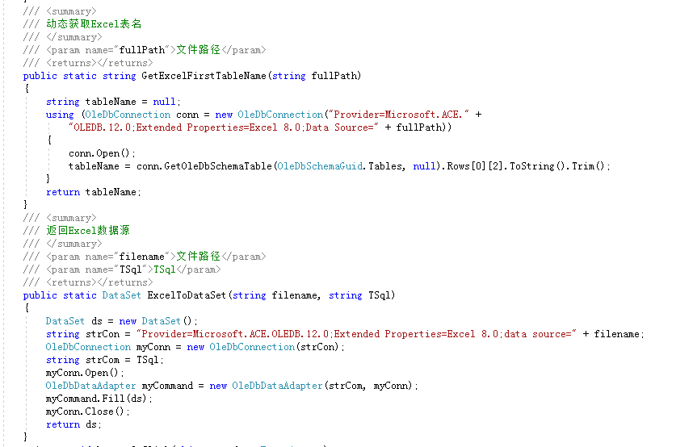
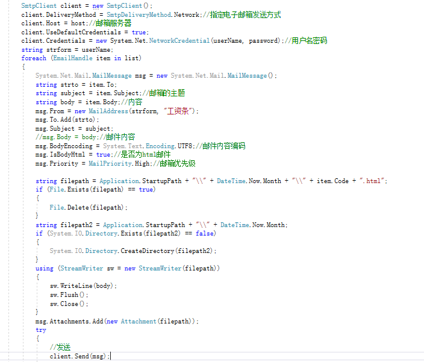

第一次写随笔,一名在实习的程序猿，做的一个小应用，需要的朋友可以参考参考，
使用WinForm实现了一个导入Excel，群发工资条的功能。功能已经实现，还不够完善,。
大致运用了OleDbConnection,SMTP
OleDbConnection来动态获取Excel的数据
SMTP发邮件
简单邮件传输协议 (Simple Mail Transfer Protocol, SMTP) 是事实上的在Internet传输email的标准。
C#邮件传输主要用到了SmtpClient MailMessage 类。
SmtpClient类是客户端类，客户端的Send方法实现了发送邮件的功能。Send方法的参数MailMessage对象。
MailMessage类是邮件信息类，通过From属性可以设置发送者。To属性设置接受者。CC抄送者。
Subject 标题；Body、内容。
效果图如图：



部分代码：



注意：用户名密码要在QQ邮箱设置里面打开Smtp服务会发给你一个密码,不然发送不了。
大致代码就是这样，如果有不清楚的同学可以加我的QQ，1428538005。